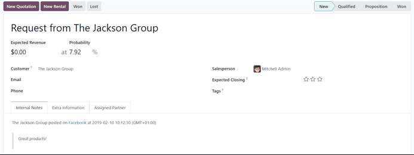
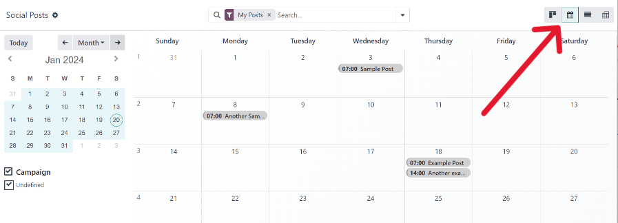

Social media accounts¶
In order to create social posts and analyze content with Odoo Social Marketing, social media accounts must be added as a stream on the application’s main dashboard.
Note
Be aware that personal profiles cannot be added as a stream. The main use of Odoo Social Marketing is to manage and analyze business accounts on social media platforms.
Warning
Odoo Social Marketing has some limitations in regards to social media accounts. For example, Odoo cannot handle a large quantity of various pages (e.g. ~40 pages) under the same company. The same limitations are present in a multi-company environment because of how the API is constructed.
Warning
In multi-company environments, if every company doesn’t activate a page at once, it will result in a permission error.
For example, if Company 1 is the only company selected from the main Odoo dashboard, and activates Facebook Page 1 and Facebook Page 2, then those pages will be accesible on the Social Marketing dashboard.
However, if on that same database, the user adds Company 2 from the company drop-down menu in the header, and attempts to add those same streams, it results in a permission error.

Social media streams¶
To add a social media business account as a stream, navigate to and select the Add A Stream button located in the upper-left corner. Doing so reveals an Add a Stream pop-up window.

In the Add a Stream pop-up window, choose to Link a new account for a business from any of the following popular social media platforms: Facebook, Instagram, LinkedIn, Twitter, and YouTube.
After clicking the desired social media outlet from the Add a Stream pop-up window, Odoo navigates directly to that specific social media outlet’s authorization page, where permission must be granted, in order for Odoo to add that particular social media account as a stream to the Social Marketing application.

Once permission is granted, Odoo navigates back to the Feed on the main Social Marketing dashboard, and a new column, with that account’s posts, is added. Accounts/streams can be added at any time.
Important
A Facebook page can be added as long as the Facebook account that grants permission is the administrator for the page. It should also be noted that different pages can be added for different streams.
Note
Instagram accounts are added through a Facebook login because it uses the same API. This means, an Instagram account needs to be linked to a Facebook account in order for it to show up as a stream in Odoo.
Posts¶
Clicking on a post from a social media stream reveals a pop-up window, showcasing the content of that specific post, along with all the engagement data related to it (e.g. likes, comments, etc.).

If desired, the user can leave a new comment of the post from the post’s pop-up window, by typing one in the Write a comment… field, and clicking Enter to post that comment.
Create leads from comments¶
Odoo Social Marketing also provides the ability to create leads directly from social media comments.
To create a lead from a comment left on a social media post, click on the desired post from the dashboard to reveal that post’s specific pop-up window. Then, scroll to the desired comment, and click the three vertical dots icon to the right of that comment.
Doing so reveals a drop-down menu with the option: Create Lead.

Upon clicking Create Lead from the comment’s drop-down menu, a Conver Post to Lead pop-up window appears.

In this pop-up window, select to either: Create a new customer, Link to an existing customer, or Do not link to a customer.
Note
If Link to an existing customer is selected, a new Customer field appears beneath those options, wherein a customer can be chosen to be linked to this lead.
Once the desired selection has been made, click the Convert button at the bottom of the Convert Post to Lead pop-up window. Doing so reveals a fresh lead detail form, where the necessary information can be entered and processed.
Insights¶
When a social media account stream is added to the Social Marketing dashboard, each stream also displays and links that specific social media platform’s KPIs (if the platform has them).
To get redirected to the statistics and metrics related to any social media account’s KPIs, click on the Insights link, located at the top of each stream.

Note
In a multi-company environment, if not all pages are selected, de-authentication happens.
For example, if the companies have 3 Facebook pages, but only grant access to 1, and try to grant access to another at a later date, they will be de-authenticated, and access to the initial page’s insights/analytics will be lost.
So, be sure to add all pages for all companies in a multi-company environment to avoid this issue. If a page gets de-autenticated, simply remove the stream, and re-establish it.
Create and post social media content¶
Odoo Social Marketing offers the ability to create and post content for social media accounts directly through the application.
To create content for social media accounts, navigated to the , and click New Post located in the upper-right corner of the Social Marketing dashboard.

Or, navigate to and click the New button.

Either route reveals a blank social media post detail form that can be customized and configured in a number of different ways.

Post detail form¶
The social media post detail form in Odoo Social Marketing has many different configurable options available.
Company¶
If working in a multi-company environment, the first field in the Your Post section of the social media post detail form is Company. In this field, select the company that should be connected to this specific social media post.
Post on¶
If working in a single-company environment, the first field in the Your Post section of the social media post detail form is Post on. In this field, determine which social media outlets (streams) this post is intended to be posted on, and/or which website’s visitors this post should be sent to, via push notification, by checking the box beside the desired option(s).
Odoo automatically provides every available social media account that’s been linked to the database as an option in this section. If a social media account hasn’t been added as a stream to the Social Marketing application, it will not appear as an option on the post template.
Multiple social media outlets (streams) and websites can be selected in the Post on field. At least one option in the Post on field must be selected.
Important
In order for the Push Notification option to appear on the social media post detail form in Odoo Social Marketing, make sure the Enable Web Push Notifications feature is enabled in the Website app.
To do that, navigate to , activate Enable Web Push Notifications, fill out the corresponding fields, and click Save.
Message¶
Next, there’s the Message field. This is where the main content of the post is created.
In the Message field, type in the desired message for the social post. After typing, click away from the Message field to reveal visual samples of how the post will look on all the previously selected social media accounts (and/or websites, as push notifications).

Tip
Emojis can also be added directly to the text in the Message field. Just click the 🙂 (smiley face) icon, located on the line of the Message field to the far right. Clicking this icon reveals a drop-down menu containing numerous emojis to choose from.
Note
If Twitter is chosen in the Post on field, a character counter appears beneath the Message field.
Attach Images¶
If images are to be used in the post, click the Attach Images button, in the Attach Images field, located beneath the Message field. When clicked, Odoo reveals a pop-up window. In this pop-up window, select the desired image from the hard drive, and upload it.
After successfully uploading and attaching the desired image, Odoo reveals a new preview of the social media post, complete with the newly-added image, on the right side of the detail form.

Campaign¶
Next, there is the Campaign field. This non-required field provides the options to attach this post to a specific marketing campaign.
To add this post to a pre-existing campaign, click the empty Campaign field to reveal a drop-down menu, containing all the existing campaigns in the database. Select the desired campaign from this drop-down menu to add this post to that campaign.
To create a new campaign directly from the social media post detail form, start typing the name of the new campaign in the blank Campaign field, and select either Create or Create and edit….

Clicking Create creates the campaign, which can be edited/customized later.
Clicking Create and edit… creates the campaign, and reveals a Create Campaign pop-up form, wherein the Campaign Identifier, Responsible, and Tags can be instantly configured.

When all the desired settings have been entered, click Save & Close to save the campaign and return to the social media post detail form.
When¶
Then, in the When field, choose either Send Now to have Odoo publish the post immediately, or Schedule later to have Odoo publish the post at a later date and time.
If Schedule later is selected, a new Scheduled Date field appears. Clicking the empty field reveals a pop-up calendar, in which a future date and time can be designated.

After selecting a desired date and time, click Apply. Then, Odoo will promptly publish the post at that specific date and time on the pre-detemined social media account(s).
Note
If scheduling a post, the Post button at the top of the social media post detail form changes to Schedule. Be sure to click Schedule after completing the social media post detail form.
Doing so, locks in that specific date/time for Odoo to send the post, and it changes the status of the post to Scheduled.
Push Notification Options¶
If one (or multiple) [Push Notification] options are chosen in the Post on field, a specific Push Notification Options section appears at the bottom of the social media post detail form.

It should be noted that none of these fields are required.
The first field in this section is Notification Title. In this field, there is the option to add a custom title to the push notification that will be sent.
To designate a specific page on the website that should trigger this push notification, enter that page’s URL in the Target URL field. Then, once a visitor reaches that specific page, Odoo will display the push notification.
Below that field is the option to add a custom Icon Image to the push notification. This is an icon that appears beside the push notification.
To upload a new image, click the ✏️ (pencil) icon when hovering over the Icon Image camera icon. Doing so reveals a pop-up window, in which the desired icon image can be located on the hard drive, and subsequently uploaded.
Once that’s complete, Odoo automatically updates the visual preview of how the icon appears on the push notification.
Note
Next, if the post is scheduled to be posted later, there is the option to ensure the post is sent in the visitor’s timezone, by enabling the Local Time option. If enabled, Odoo will send it at the appropriate, pre-determined time, taking the visitor’s location into consideration.

Then, there is the Match all records field. This field provides the ability to target a specific group of recipients in the database, based on certain criteria, and can be applied to match all or any of the rules.
To utilize this field, click the + Add condition button, which reveals an equation-like rule field.
In this equation-like rule field, specifiy the specific criteria Odoo should take into account when sending this post to a particular target audience.

To add an additional rule, click the ➕ (plus sign) icon to the far-right of the rule.
To add a branch (series of additional rules based on the previous rule, to further specify a target audience), click the unique branch icon, located to the right of the ➕ (plus sign) icon.
Lastly, click the 🗑️ (trash can) icon to delete any rule.
The size of the specified target audience of recipients is represented by the number of Records displayed beneath the rules.
Posts page¶
To see a complete overview of posts, go to Odoo . Here, on the Social Posts page, every post that has been created and posted with Odoo can be seen and accessed.
There are four different view options for the Social Posts page data: kanban, calendar, list, and pivot.
The view options are located in the upper right corner of the Posts page, beneath the search bar.
By default, Odoo displays the posts in a kanban view. The information on this page can be sorted even further, via the left sidebar, where all connected social accounts and posts can be quickly seen, accessed, and analyzed.
The kanban view is represented by an inverted bar graph icon in the upper-right corner.

The calendar view option displays a visual representation of posts in a calendar format of when posts were published, or are scheduled to be published. This option provides a clear overview of any planned day, week, or month, and Odoo displays all drafted, scheduled, and published posts.
Clicking on a date reveals a blank social media post detail form, in which a social media post can be created, and Odoo will post it on that specific date/time.
The calendar view is represented by a calendar icon in the upper-right corner.
The list view option is similar to the kanban option, but instead of individual blocks, all post information is displayed in a clear, list layout. Each line of the list displays the Social Accounts, Message, and Status of every post.
There is also a helpful left sidebar that organizes all posts by Status and lists all connected Social Accounts, as well.
The list view is represented by four vertical lines in the upper-right corner.

The pivot view option provides a fully customizable grid table, where different measures of data can be added and analyzed.

The pivot view option provides numerous analytical options, allowing for in-depth, detailed analysis of various posts and metrics.
Click on any ➕ (plus sign) icon next to a line in the pivot table to reveal more metric options to add to the grid.
While in the pivot view, the option to Insert in Spreadsheet is available, located to the right of the Measures drop-down menu, in the upper-left corner of the Social Posts page.
Next to the Insert in Spreadsheet are three options, specific to the pivot view.
From left to right, those options are:
Flip Axis, which switches the X and Y axis in the grid table.
Expand All, which expands each line in the grid, revealing more detailed information related to it.
Download, which, when clicked, instantly downloads the pivot table as a spreadsheet.
Visitors¶
To see a complete overview of all the people who have visited the website(s) connected to the database, navigate to .

Here, Odoo provides a detailed layout of all the visitors’ pertinent information in a default kanban view. If visitors already have contact information in the database, the option to send them an Email and/or an SMS is available.
This same visitor data can also be viewed as a list or a graph. Those view options are located in the upper-right corner of the Visitors page.
Social media page¶
Another way to quickly link social media accounts to Odoo Social Marketing can be done on the Social Media page. To access the Social Media page, navigate to .
On the Social Media page there is a collection of all social media options, each complete with a Link account button: Facebook, Instagram, LinkedIn, Twitter, YouTube, and Push Notifications.

Social accounts page¶
To see a list of all social accounts and websites linked to the database, go to . This Social Accounts display the Name, the Handle/Short Name, the Social Media platform, who it was Created by, and the Company to which it is associated.

To edit/modify any of the social accounts on this page, simply select the desired account from the list on this page, and proceed to make any adjustments necessary.
Social streams page¶
To view a separate page with all the social media streams that have been added to the main Social Marketing dashboard, navigate to .

Here, the social stream information is organized in a list with the Social Media, the Title of the stream, the Type of the stream (e.g. Posts, Keyword, etc.), who it was Created by, and the Company to which it is associated.
To modify any stream’s information, simply click the desired stream from the list, and proceed to make any necessary adjustments.
See also
Social marketing essentials¶
Odoo’s Social Marketing application helps content marketers create and schedule posts, manage various social media accounts, analyze content effectiveness, and engage directly with social media followers in one, centralized location.